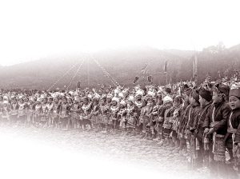

在广西与贵州交界处，有一个乡，居住着侗、苗、汉、壮等民族。这个乡，便是世界文化遗产“侗族大歌”在广西的“根植地”——三江侗族自治县梅林乡。3月5日，记者披着蒙蒙春雨走进梅林，感受“二月二”歌节的美妙与民族融合的欢乐……
十里八乡同来“赶场”
沿着狭长的都柳江，一路蜿蜒于黔桂之间。绕山坳，涉河水，待踏上一叶扁舟时，已是黄昏。江面渐变墨绿，远山一阵迷蒙。摆渡的村民笑道：这一天，是最繁忙的时候，也是梅林最热闹的日子。
梅林乡像一只拇指由广西伸入贵州，毗邻贵州从江。乡政府和歌场就设在梅林村。每年农历二月初二，十里八乡的人们都会从四面八方来到梅林村“赶场”。侗族大歌，是“二月二”的主唱。乡文化广场上，早已挤得水泄不通，乡亲们身着盛装，翘首期盼“大歌”开场。就连两三岁的小孩，也一身崭新的民族服装，骑在父亲肩膀上盯着黑瓦木梁的“舞台”目不转睛。
“嗯——咧——”一群盛装侗家妹哼着侗族大歌登台，台下顿时鸦雀无声。没有指挥，没有伴奏，只有姑娘清亮的声音，似虫鸣鸟叫，若小河流水。侗族大歌，在侗语里叫“嘎老”，意为“从古流传下来的大歌”，至今已有2500多年历史，2009年被列入世界非物质文化遗产名录。
黔桂交界的每一个侗族村寨几乎都有侗族大歌队，老老少少都会唱侗族大歌。在当地人眼里，“人不唱歌人会老，不耕不耘荒了田”。逢年过节，寨子之间常互邀侗族大歌赛——这不，正在台上唱着的，是来自贵州省黎平县永从乡中罗村的侗族大歌队。歌队里，有一名从梅林嫁过去的侗家女，叫罗彩真。出嫁前她最爱唱侗族大歌，因为贵州小伙子一句“我们村也唱侗族大歌的”，她便引为知音，成了那个贵州小伙子的媳妇。这次，她特地带着5岁的女儿回娘家唱歌。“贵州、广西的侗族大歌唱起来感觉差不多。等女儿7岁了，我也要教她唱。”罗彩真一边整理着女儿头饰，一边笑着说。
当晚，来自贵州黎平、从江、小黄等地的侗族大歌村队和广西梅林腊用、勒转、车寨等地的侗族大歌村队在台上台下切磋。梅林，成了“歌林”。
三江早在11年前便将侗族大歌编入教材，并在全县各中小学开设侗族大歌校本课程。这次“二月二”，梅林乡300多名中小学生也兴致勃勃地加入了村民侗族大歌队联唱。人群中，几个4岁左右的孩子雄赳赳气昂昂放声高唱。稚嫩的神情，似乎还不十分清楚什么叫“侗族大歌”，但洋溢在脸上的欢乐，是那样纯真。侗族大歌，将伴随他们度过美好的童年……
“官人”走寨侗苗同乐
“二月二”，在汉族有“龙抬头”之说。在三江这个边境乡村，则有“抬官人”习俗。
梅林乡村连村、寨连寨，苗寨就建在侗寨中。相传很久以前，当地发生瘟疫，寨子里不断死人。人们认为有怪兽作怪，纷纷逃难。侗王见状，便请苗王下山协助驱赶怪兽，使山寨恢复太平。为纪念侗、苗两王的协作精神，当地人便在每年“二月二”“抬官人”，祈愿来年风调雨顺。
这天一大早，“侗王”来到苗寨。随着鞭炮声起，只见“苗王”被抬上轿子充当“龙头”，一些头戴斗笠、身披斗篷的“渔民”跟在一旁做“龙鳞”，一群身着节日盛装的青年男女充当“龙身”。踏着鞭炮声，这条“长龙”浩浩荡荡出发“走寨”了！
在当地乡亲眼里，只有热情开明、德高望重的人，才能成为“苗王”。“苗王”要经常到各寨巡视，给人们支招，带领着大家寻求幸福。“长龙”刚从苗寨出来，侗寨里巷子两旁的干栏都敞开了门栏，侗家人纷纷从木楼上探出头来，兴奋地高喊：“苗王来了！苗王来了！”
路边的摊贩放下了秤杆，街边的行人止住了脚步，街巷里每一个人都朝着“长龙”欢呼起来。一群群调皮的小孩溜进“龙身”里，屁颠屁颠地欢呼雀跃。
“哈哈——哇哇——”笑声、叫声传出的地方，肯定是“渔民”在捕鱼了。那些画花脸、穿着稀奇的“渔民”操起网兜，手舞足蹈，见水就捞。水里，还真的跳出鱼来！
“抬官人”，是“二月二”最有趣的民俗活动，承载着侗、苗民族浓浓的情谊。
芦笙踩歌无人入眠
如果说，悠久的“官人”走寨走过了梅林古老的岁月。那么，篝火晚会也将那“二月二”的激情点燃了125个年头！
当一根粗木在鼓楼火塘里燃起时，人们便知道——芦笙就要吹响了！
“呼呼呼……”一支芦笙队从黑暗中走来，向篝火旺盛的鼓楼走去。勒转寨老鼓楼里，李长河的芦笙队已经把芦笙吹得响遍了全村——梅林村寨有个规矩：只要听到寨子外芦笙声响起，哪怕半夜三更也要起身出来吹奏相迎。李长河带领的侗寨芦笙队今年正月刚从贵州从江县卡伟村“切磋”回来，明天又要迎接从贵州岜沙来的苗族芦笙队了。这天晚上，他们要预先做好准备——果然，没多久，勒成、勒用等寨子芦笙队的乐声便由远而近了。人们欢呼着忙碌起来，梅林村里5座鼓楼都燃起了篝火。
很快，鼓楼里便人声鼎沸了！各村各寨的村民和慕名而来的湖南、广东、江苏等地的游客手牵手围着篝火跳起了芦笙“踩歌堂”。天空飘下的雨花，瞬间被人们的热情融化。高高的火苗蹦出闪闪火星，激起的是更狂热的舞步。芦笙悠悠，笑语连连……这一夜，无人入眠。
次日清晨，小伙子们又神采奕奕吹着芦笙去江边迎笙。蜿蜒于黔桂之间的江水，似乎也流淌得更为欢快。
“嘿呀嗬——”广西这边，侗族芦笙吹起。贵州那边，岜沙苗族芦笙队跳着轻快的舞蹈迎了上来。那岜沙队的队长，带着妻子一起吹来。
广西这边，青竹制作的大芦笙发出浑厚的乐音；贵州那边，黄竹制作的细芦笙吹出轻松明快的音符。侗族的浑厚，声如洪钟；苗族的清亮，声如蝉鸣。一唱一和，煞是动听。吹到最精彩的“芦笙踩歌堂”时，所有芦笙队都聚拢来，围成一个笙塘，边吹边舞。围观的群众，也都情不自禁踩着节拍，绕圈踏步起跳。银饰相撞发出的叮当声，伴着芦笙，铿锵脆亮。整个场面，气势恢弘，蔚为壮观。
这是欢乐的踏歌！这是民间的大歌！这是民族的合唱！